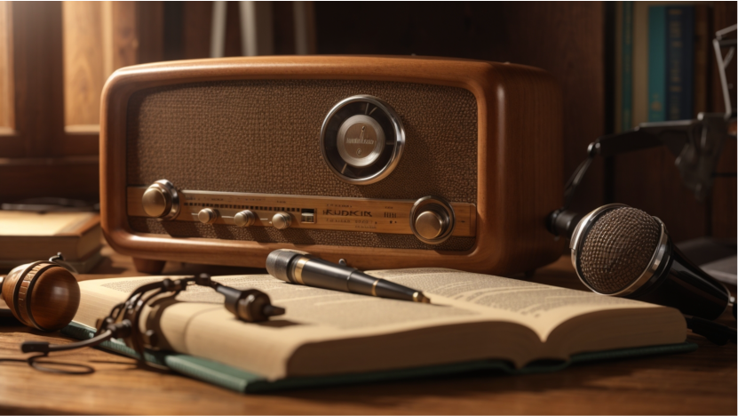

Always-on Listening
From late-night slow jams to high-energy hip-hop and rock rotation, MusicMixx is designed to keep the music flowing with station-driven listening that feels like real radio, not random shuffle.
Streaming Music Experience
MusicMixx is built for listeners who want more than a basic playlist. Jump between handpicked stations, explore different moods and genres, and stay locked into a polished radio-style experience designed to feel live, immersive, and always in motion.

From late-night slow jams to high-energy hip-hop and rock rotation, MusicMixx is designed to keep the music flowing with station-driven listening that feels like real radio, not random shuffle.
Every part of the app is centered on station identity — the sound, the mood, the pacing, and the now-playing experience — so each visit feels like tuning into a different broadcast world.
Fun facts about the artists, tracks, and genres you're listening to are sprinkled throughout the experience, giving you something new to discover with every station and every song.
Tune in to the live MusicMixx player and move through a station experience shaped by curated rotation, visual motion, and radio-inspired controls.
94.5 FM
Now Broadcasting: The Golden Era Mix
Golden era all day
Hip-hop’s golden era helped shape sampling, DJ culture, and lyrical storytelling.
MusicMixx is designed to feel bigger than a simple music player. From curated stations and branded moods to a structured weekly lineup and a polished on-air interface, every part of the experience is built to feel like a place listeners can return to, explore, and stay connected with.